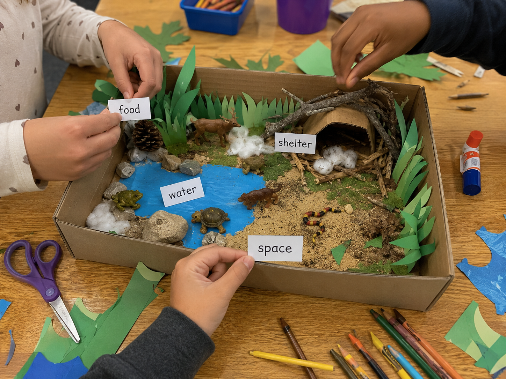
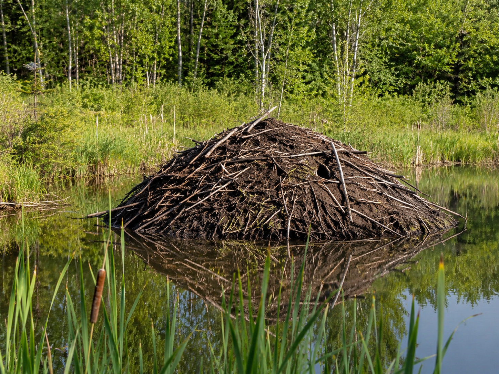
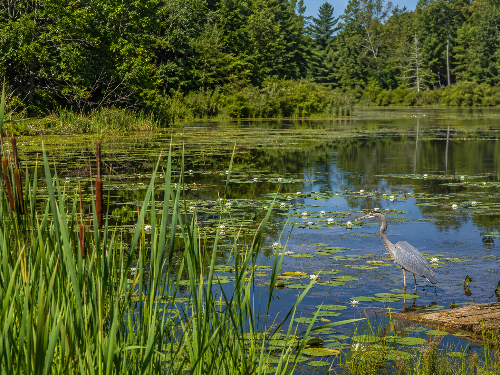

Hold this question in your mind as you build today. By the end, you'll have evidence to answer it!
Start here. Learn the words you will use today.
Think about an animal you know — a bird, a frog, a rabbit, anything. Picture where it lives. What does that place look like? What does it provide for the animal?
Write your answer in your science notebook. Keep it — you'll come back to it at the end.
These are the words scientists use when they study habitats and survival. Tap each card to see the definition. You'll use all of these today.
Copy this sentence carefully into your science notebook:
"An organism can only survive in a habitat that provides the food, water, shelter, and space it needs."
Now learn the main science idea.

A habitathabitatThe place where an organism lives and gets what it needs to survive. is more than just a location. It's a place that provides everything a living thing needs to stay alive. A fish doesn't just live in a lake — the lake gives it water to breathe, food to eat, plants to hide in, and room to move.
Not every organism fits every habitat. A cactus thrives in a dry desert because it stores water in its thick stem. Put that same cactus in a shady rainforest and it won't get enough sun to survive. Organisms and their habitats are matched to each other.
Every habitat has two kinds of parts. Living parts include the plants, animals, fungi, and other organisms that share the space. Nonliving parts include water, soil, sunlight, temperature, and air. Both kinds matter.
A wetland has cattail plants, frogs, herons, and dragonflies — those are the living parts. But it also has a pond, muddy soil, and warm summer sunlight. Without the nonliving parts, the living things couldn't survive. Everything in a habitat is connected.
Scientists can't always study a real habitat. A rainforest is too big to carry into a lab. A deep-ocean trench is too dangerous to visit easily. So they build modelsmodelA representation used to study or explain something. — simplified versions that show the most important parts.
A good model isn't perfect. It leaves some things out. But it helps you see how the pieces fit together and ask better questions. Today, your model will show what organisms need and how a habitat provides it.
Real-World Connection: Ecologists who study the Everglades use habitat models to figure out what would happen if water levels dropped or a new species arrived. Models help them test ideas before anything changes in the real ecosystem.

In any habitat, some organisms survive well, some survive less well, and some cannot survive at all. Whether an organism can live somewhere depends on whether that habitat provides what it needs — food, water, shelter, and space.
This is a cause-and-effect relationship: the conditions of a habitat directly affect which organisms can live there.
Curious? Go Deeper
Why do some organisms live in multiple habitats? A great blue heron is a good example. It nests in tall trees — that's one habitat. It hunts in shallow water — that's another. And it migrates hundreds of miles between the two. Scientists say it uses both habitats, but each one provides something different.
Some organisms are called habitat specialists — they can only survive in one very specific place. The Florida snail kite, a hawk, eats almost nothing but apple snails, which only live in the Everglades. If that wetland dries out, the snail kite has nowhere else to go. Other organisms are generalists — raccoons, crows, and coyotes can thrive in forests, suburbs, and even city parks. Which do you think is more common?
Now test the idea yourself.

You'll need: a box, tray, or folded paper for the base · pencil and colored pencils · scraps of paper, cardboard, or other materials to represent organisms and habitat parts · scissors (optional) · your science notebook
You're going to build a model of a real habitat. Your model won't be perfect — that's fine. Models never are. What matters is that it shows the important parts and helps you explain what you know.
Choose your habitat. Pick one: forest, desert, wetland, ocean, or grassland. Think about which one you know the most about — or which one you're most curious about. Write your choice in your notebook.
Build your model. Use your materials to represent the habitat. Include at least three organisms, a water source, a food source, and shelter or space. It can be a drawing, a diorama, or a combination of both.
Label everything. Each organism and each resource should have a label. Don't just write the name — add a note saying what it provides or what it needs. For example: "oak tree — provides shelter and food (acorns)."
Show a connection. Pick two organisms in your model and draw an arrow between them. Label the arrow with what connects them. For example: "hawk eats rabbit" or "bee pollinates flower." One connection is required — add more if you can.
Create a needs chart. In your notebook, draw a three-column chart with the headings: Organism · What It Needs · How the Habitat Provides It. Fill in a row for each organism in your model.
Good scientists don't just build — they think carefully about what they made. Be specific. "There's a deer" is less useful than "there's a deer that needs grass for food and tall shrubs for shelter."
Tell the story of your habitat from beginning to end — what you decided to include, how you showed the connections, and what your model helps you understand about organism survival.
Think through each question before moving on. Talk it through or think about it in your mind.
Check what you understand.
Show what you learned.
🔍 Part A — Label Your Habitat Model
Look at your completed habitat model. Make sure each part is labeled clearly — organism names, resource types, and connection arrows.
🚀 Part B — Short Answer
Answer each question in complete sentences. Use your science vocabulary!
Look at your habitat model. Could an organism from a different habitat survive in yours? Use your model as evidence.
What do you think?
💡 Start with: "I think that [organism from a different habitat] could / could not survive in my [habitat name] because…"
What did you observe or discover that supports your thinking?
💡 Start with: "I know this because when I built my model, I noticed that…"
Why does that make sense?
💡 Start with: "This makes sense because…"
📚 Try to use at least one of these words: habitat, resource, survive, environment
🎨 Part C — Draw & Label a Second Habitat
Pick a different habitat than the one you built. Draw it and label at least three organisms and two resources. Add a note explaining why those organisms fit that habitat — not a different one.
Submit your work on Canvas using one of these options:
Make sure your submission includes all of these: